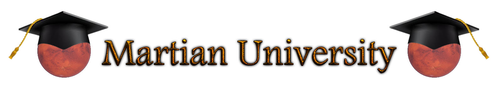
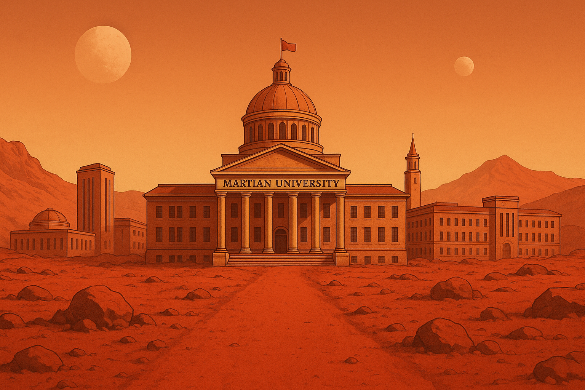
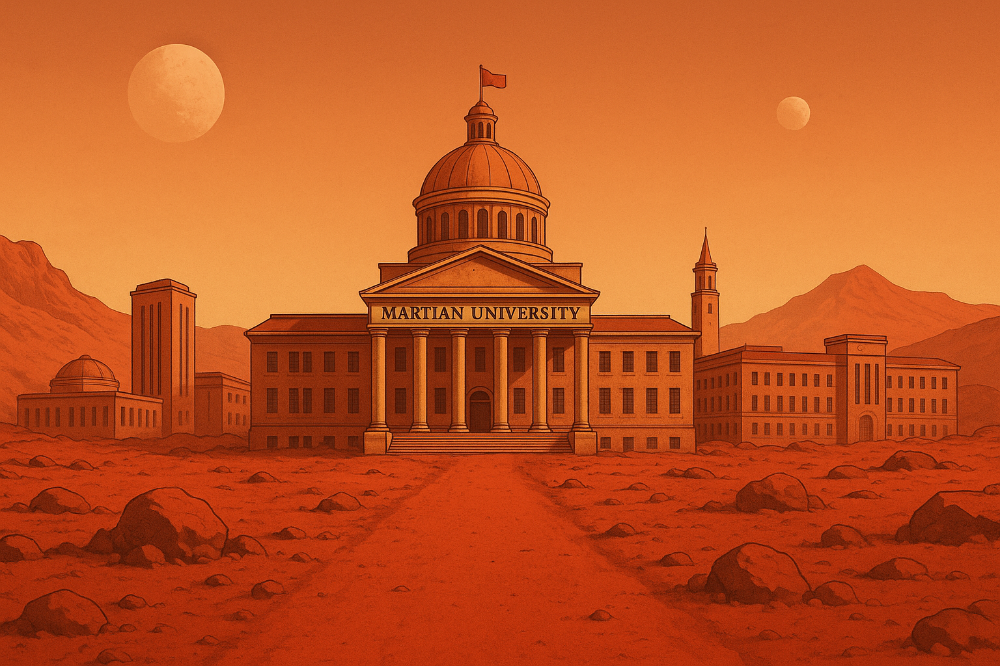

About Martian University
Once upon a time there was no MU. Then we landed on Mars. Now there is. Wowie zowie! In 2135, L. Don Cupboard became one of the first men to set food on the red planet, and immediately awestruck by its beauty and potential, was inspired to create a first-of-its-kind school on another terrestrial body. MU was officially founded four years later, and now you too have the chance to experience the wonder he once did by attending!

 
